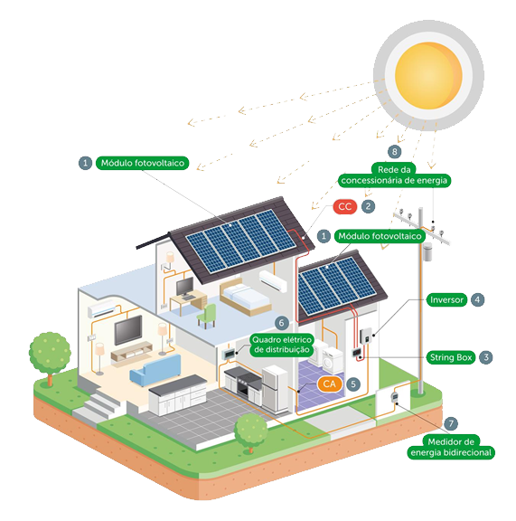
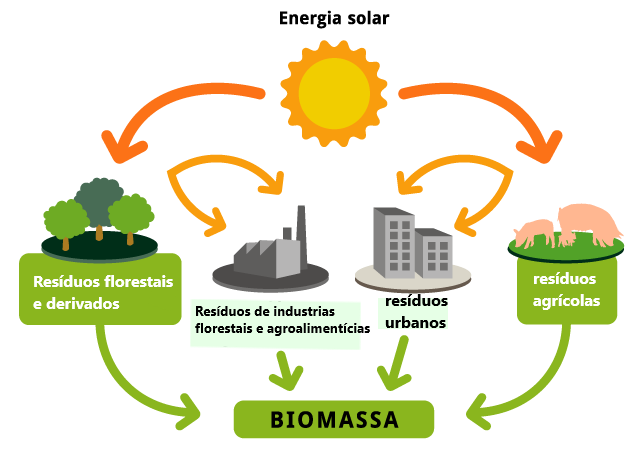

As fontes de energia renováveis, também conhecidas como energias limpas, são capazes de conciliar desenvolvimento tecnológico com a preservação do meio ambiente. Além de serem pouco poluentes, essas fontes podem ser encontradas facilmente na natureza, como no sol e no ar. Nós da Ecolize, temos como objetivo divulgar a existência dessas modalidades de energia.
modalidades de energia?
As fontes de energia renováveis, também conhecidas como energias limpas, são fontes de energia de diversos tipos de natureza, que dentro de um sistema de conversão adequado, são transformadas em energia elétrica. Derivadas de recursos naturais que se renovam sazonalmente e em um curto período de tempo, são chamadas também de fontes de energia inesgotáveis. Podemos citar como bons exemplos a energia solar, a eólica ou até mesmo a energia hídrica. Nós da Ecolize, temos como objetivo divulgar a existência e alternativa dentro das modalidades de energia e conscientizar a grande massa de que graças as energias limpas, podemos sim conciliar desenvolvimento tecnológico com a preservação do meio ambiente. O mais impressionante, é que boa parte dessas modalidades de energia, podem ser usadas em casa e por qualquer tipo de pessoa, com elas, você pode pagar mais barato em sua conta de luz e ajudar a preservar o meio-ambiente, por exemplo! Além disso, existem também grandes usinas de produção de energia elétrica responsáveis por sustentar cidades ou grandes áreas inteiras, baseadas na conversão dessas energias, como as usinas hidrelétricas e de
Quais as modalidades de energia limpa mais populares?

energia fotovoltaica (solar)
A energia solar fotovoltaica, permite gerar energia elétrica a partir da captação da luz do sol. Utilizada desde a década de 50, inicialmente para alimentar satélites e estações espaciais, hoje, é usada amplamente em casas, empresas e indústrias em nosso país. As placas capturam as partículas de energia expelidas pelas luz solar, os fótons, essas células criam corrente elétrica continua dentro do processo de energização antes de se criar energia elétrica, assim, a energia gerada após esse processo é capturada, a corrente contínua e modificada para corrente alternada e então, temos energia elétrica disponível para uso.
energia eólica
A energia eólica, ou energia dos ventos, se baseia na transformação da força do ar em movimento em energia elétrica. As hélices da turbina eólica giram conforme a passagem do vento contra suas pás, essa rotação, gera energia mecânica que alimenta um gerador de energia elétrica onde a corrente elétrica é produzida. O Brasil é um dos países que mais investe em criação de usinas aero geradoras de energia. Um aerogerador moderno, pode atingir até 200 metros de altura com pás maiores até mesmo que as asas de um avião, isso, motivado pelo fato de que a força dos ventos em altitudes maiores é mais intensa. Nos primórdios, essa tecnologia era usada para sustentar o trabalho de moinhos.
energia hídrica (hidrelétrica)
A energia hídrica (ou hidrelétrica, já que é diretamente associada a criação de energia elétrica através da água), utiliza o movimento das águas de rios, lagos ou derivados contidas em barragens. Além de gerar energia, a água acumulada nos reservatórios pode ser utilizada para o abastecimento de cidades ou na irrigação das lavouras. As hidrelétricas que não utilizam reservatórios são chamadas de usinas fio d'água. Ao criar-se energia gravitacional potencial nas barragens, movimento seguido e contínuo da água, movimenta uma hélice interna ao gerador de energia da usina, gerando assim energia mecânica que em seguida é convertida em energia elétrica. Hoje, o setor elétrico brasileiro, é fortemente vinculado ao uso de usinas hidrelétricas.

energia biomassa
A energia de biomassa é uma fonte renovável utilizada para a produção de calor e eletricidade por meio da queima direta de materiais orgânicos ou dos gases liberados pela sua decomposição, além da produção de biocombustíveis. Em uma usina termoelétrica por biomassa, os diferentes tipos de matérias orgânicas são queimados para gerar calor e aquecer água, produzindo vapor em alta pressão que alimenta as turbinas e geradores elétricos. A biomassa é uma das fontes energéticas renováveis mais antigas utilizadas pelo homem, que desde as primeiras civilizações já queimava lenha para o cozimento de alimentos ou geração de calor durante o frio. Hoje, a madeira ainda é a matéria orgânica mais utilizada para a geração de energia biomassa, embora outros resíduos também já sejam empregados, como bagaço de cana-de-açúcar, resíduos agrícolas, algas, restos de alimentos, gás metano de aterros ou mesmo excremento animal.
fale conosco
envie uma mensagem para nós! se quiser efetuar uma instalação de um gerador de energia limpa na sua casa, noa mandar um recado de apoio ou se tiver alguma dúvida, seu momento é agora!